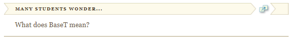
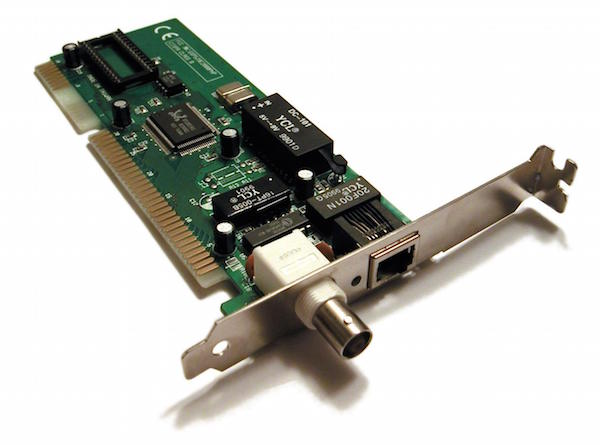
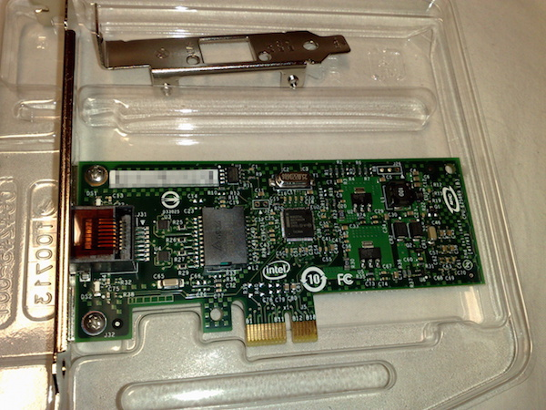
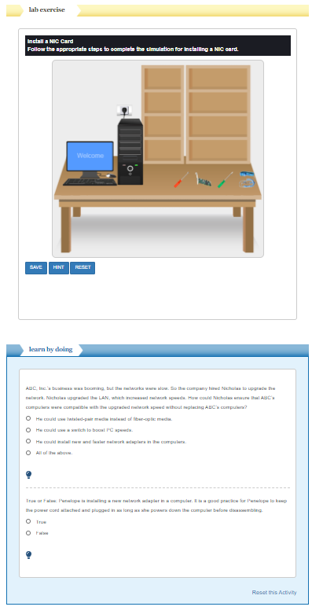
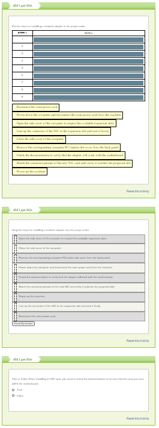

網路設備 <<
Previous 安裝網絡適配器
有時您可能需要安裝附加網絡接口卡（NIC）。當前的台式機主板的後方輸入/輸出（I / O）面板上應具有內置的NIC。如果內置NIC出現故障或需要升級以匹配當前的局域網（LAN）規格（即從10/100 BaseT到10/100），則安裝附加卡可以使機器保持運行狀態。 / 1000或10GBaseT）。

要安裝NIC，請按照下列步驟操作：
檢查文檔以確認哪個NIC將與您的擴展插槽（PCI或PCIe）和LAN要求相匹配。確保適配器可與主板配合使用。
關閉計算機電源，然後從計算機上斷開主電源線。
按照安全維修慣例（正確的接地/防靜電皮帶），打開計算機的側蓋，檢查可用的擴展槽。
匹配新NIC卡的連接器/引腳，並驗證它是否與建議的插槽匹配。
從背面板上卸下相應的計算機PCI選件插槽蓋。
將NIC的連接器對準擴展插槽，並在將支架向上推至計算機的背面板上時將其牢固就位，以確保正確對齊。用通常提供的螺釘擰緊新的NIC。
請按照安全維修步驟關閉計算機的側蓋。
重新連接主電源線。
打開機器電源。
安裝NIC硬件後，驅動程序應根據操作系統自動安裝。對於Windows（Vista / Win7 / Win8.1 / Win10），請驗證網絡和共享中心中的連接。對於Linux，請轉到網絡設置，然後根據Linux發行版（例如Red Hat Linux或Ubuntu）在線搜索適當的驅動程序。


在下面的實驗室中，您應該安裝新的網絡接口卡（NIC）。這樣做時，請確保卡具有正確的引腳排列。另外，請確保使用適當的ESD預防措施。


網路設備 <<
Previous